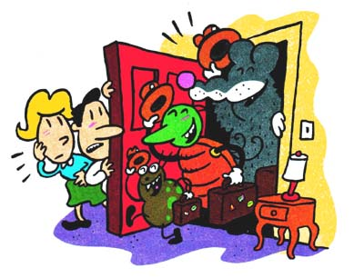
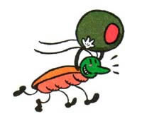
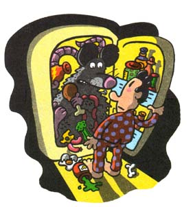

Pest Control: Tips From A Pro
A career exterminator discusses low-impact pest control.
By Jeff A. Lee
February/March 1999
COUNTRY SKILLS
A career exterminator gives you the lowdown on low-impact critter control.
By Jeff A. Lee
Humankind has been dealing with some type of household pest since the dawn of its existence, though I imagine our early ancestors worried more about wild animals than they did about a cockroach or two. The fact remains that, despite all our best efforts, household pests continue to exist and invade our homes. And since the cockroach is hardy enough to get the nod as the species most likely to survive in the wake of a comet strike or nuclear catastrophe, my job dealing with them (and the other critters that follow) is more accurately described as pest control than pest elimination. For the time being, what I--and you--man do is create little oases in which we live our lives without them.
It will not shock you to learn that most pests gain entrance to our buildings and homes through doors, windows, chimneys, vents, cracks, or any other openings to the outside. But an avenue that is nearly as troublesome and less obvious is through groceries and grocery bags. You can have but a very limited idea of how clean or dirty your corner store's supplier's warehouse is. If a particular warehouse has a pest problem and it delivers to an establishment you frequent, you are going to have a pest problem. I mention this only to challenge the notion that a house with pests is by definition a dirty home. Cleanliness will always help, but even the most fastidious among us will be forced to act as an exterminator at some point. A basic understanding of your adversaries and of low-impact methods to control them will save you time, money, and embarrassment.
Roaches
There are more than 3,500 known roach species in the world, 57 of which reside in the United States. Only five of these pose any significant pest problems, however. They are the German, Brown Banded, Oriental, American, and the Smoky Brown roaches.
The Smoky Brown roach is solid dark brown to black in color and rather large at one and a half inches. It is found in sewers but mainly lives outdoors and is a problem in the Gulf and Southeastern United States. The time from egg to adult is from 320 to 388 days.
The American roach is reddish brown throughout, with a pale band just below its head. This is the largest roach at one and three quarter inches. It prefers moisture and is most common on ships, as well as in basements and sewers. The time from egg to adult is 265 to 616 days.
The Oriental roach is dark red to brown to black throughout and measures in at an inch and a quarter. This species is also a moisture-lover. Time from egg to adult is 300 to 800 days.
The Brown Banded roach is tan to golden, with faint V-shaped lighter bands on its wings. This is a smaller roach at nine-sixteenths of an inch. It prefers dry areas such as closets and upper levels of buildings. The egg to adult time is 95 to 276 days.
This brings us to the most troublesome and widely distributed roach-the German cockroach. This roach is light brown with two dark stripes on its body, and like the Brown Banded roach, is nine-sixteenths of an inch long. The egg to adult phase is only 55 to 68 days. Note this number as compared to the other four species mentioned. This roach also carries twice as many eggs in its egg case, which makes it small wonder that we have such problems with it. German cockroaches are thigmotactic, which means they prefer squeezing into tight places where their backs and undersides make contact with other surfaces. They are most active at night, although they can be active during the daytime if a high population is present. They will radiate out from areas of steady food supply such as kitchens, pantries, and garbage areas. German roaches also have a tendency to "cluster." Once they find a proper harborage, they will concentrate themselves in that area and continue to return to it time after time.
Their harborages are almost unlimited, but they do prefer warm, moist areas. Their favorite place to just sit is a wooden surface, but any crack or crevice will do, since they can hide in spaces as narrow as one-sixteenth of an inch. Other harborages may include telephones, refrigerator motors, electrical outlets and switches, stoves, ovens, dishwashers (between the exterior panels and the insulation), clocks, radios, and televisions.
A German roach will travel through any and all types of organic waste and then just as easily traverse your countertops, dinnerware, and eating utensils. Their potential for disease transmission cannot be ignored and is by far the best reason to obtain some type of control over these roaches.
The best and most effective weapon against the German roach is sanitation, but checking an existing population is difficult without using some type of chemical control. Extreme heat or cold is very effective, but not very practical in most situations. One of the most effective and least toxic pesticides is boric acid. Some professional pest control operators are reluctant to use boric-regardless of its safety record-because its powdered form can be messy and time consuming to apply. The seven or ten days it requires in order to take effect should also be taken into consideration if your problem needs immediate resolution. Boric acid is unique, however, in that it can kill in two days. First, it acts as an abrasive. Roaches will groom themselves several times an hour with their legs, and after walking through the boric acid, they literally cut or scrape their hard exoskeleton with the boric acid. Since they have no way to repair their leaking exoskeletons, they slowly desiccate. Boric acid will also act as a stomach poison if ingested by the roach. Diatomaceous earth and silica aerogel also act as abrasives, but not as poisons. Boric acid should be applied as a dust with an applicator that allows you access to cracks and crevices. A simple plastic mustard or ketchup squeeze-bottle works well for this purpose. Apply very lightly, as if you were salting your evening meal. Large clumps or piles of boric will be avoided by roaches. Do not apply boric acid dust to roach-infested radios, televisions, or any other sensitive electronic equipment unless you want both a dead colony of roaches and a dead appliance. Plastic discs with insecticide bait work well for electronic equipment applications.
More toxic chemicals range from products that kill almost instantly to ones that take two or three days. These insecticides are sold in either liquid or powder forms and are mixed with water in a hand sprayer and applied as a spray. The type of insecticide used is not nearly as important as how the insecticide is applied. It is not necessary to spray every single square inch of living space. It is more practical and efficient to spray only where the roaches are. For example, if roaches are prevalent in the kitchen, you naturally want to spray the kitchen very well, but there is no need to soak the bedroom in the same way.
Under no circumstances should you use a pesticide not specifically labeled for what you are using it for. The pesticide you use in your outdoor garden will probably kill roaches, but it never was intended to be used inside the house, for any number of good and specific reasons.
In fact, I do not endorse the heavy use of toxic chemicals in the home unless absolutely necessary. I do feel pesticides serve a function, especially in a roach or rat--infested environment where human health is at risk. The pesticides can lie used to gain control of the situation; then less toxic chemicals may be used to maintain control. My own home is lucky if it gets treated once a year and even then the majority of the spraying is done on the exterior. I have, however, gone to the trouble of removing all of my switch plates and electrical plates and applying powdered boric acid, which will stay active as long as it remains dry.
Rodents
There are few other pests that invoke as much fear and utter disgust as do rodents. They not only cause structural damage, but also carry such diseases as the human plague, salmonellosis, rat bite fever, infectious jaundice, murine typhus, and several other pathogens. There are thousands of rat bites reported every year in the United States. Listed below are the three types of rodents that cause the most concern and damage to our society.
The Norway rat is also referred to as the Brown, Wharf, or Sewer rat. This rodent can grow up to 16 inches long, with a tail length of up to seven and a half inches. They can weigh up to 12 ounces.
The Roof rat is also known as the Black. Ship, or House rat. These rats can grow to 15 inches, with an eight-and-a-half to ten-inch tail. They usually weigh no more than eight ounces.
Of the two, the Norway is the larger, stouter rodent. It's also got thicker, shorter ears and a shorter tail than the Roof rat.
The common house mouse is light brown to gray in color and reaches three and a half inches, with its tail as long as its body.
Rodents are fantastically acrobatic and are able to run along very narrow surfaces such as the electrical wires leading to your home. They can also pass through any opening their skull can fit through (the skull being the only nonflexible part of their body). They can jump vertically at least 36 inches, reach about 13 inches above a flat surface, swim underwater for 30 seconds (which is more than sufficient time to emerge from a toilet trap), and swim for a half mile in open water.
The size and number of rodent litters vary with habitat-especially food supply. Gestation is 21 to 23 days, with six to 12 born per litter. Females can breed again the day after giving birth.
Rodents are afraid of anything new in their surroundings. Any new trap or poison will generally be avoided for two or three days until they become accustomed to it being there. Rodents are not overly intelligent, but will mimic behavior of other rodents. For example, if a mother rodent and her brood of young out foraging for food come upon a glue board or snap trap that the mother recognizes as a death machine, she will merely jump over the object. Her young will mimic her behavior and will continue to jump over any glue board or snap trap they encounter for the remainder of their lives. This is why it is of utmost importance when confronted with a rodent infestation that you completely eliminate the population; this avoids educating a generation of rodents that are trap or bait "smart." This can be accomplished by putting out enough traps and poison to have a very high initial kill rate and continuing this process until all rodents are eliminated.
Snap traps and glue boards are two common mechanical control methods. A glue board is merely a plastic tray with very sticky glue poured in it. I have found more times than not that the glue is not sticky enough to hold a full-size rodent. Snap traps on the other hand are quite efficient, though they must be placed properly. Rodents use their facial whiskers extensively to feel their way, and they like to travel with one set against some surface (like a wall). A snap trap set in the middle of a room is useless. The bait trigger should be placed facing the wall along a route known to be traveled by rodents. A piece of fruit or apple slice works well as a bait, but peanut butter seems to be a particularly powerful lure.
There are many forms of rat poison that can be used, including some that cause vomiting. Since a rodent lacks the ability to vomit, you can imagine the effect. I have found that rodents have a passionate love for tomato products, especially ketchup. A bait laced with ketchup greatly enhances its attractiveness. Other food sources must he eliminated if a poison bait is to be used, otherwise the rodents will continue eating their normal food and ignore the bait. One drawback to using poison baits is that the rodents may crawl into an inaccessible area and die, thus producing an odor. This odor usually dissipates in about three days.
Ants and Fleas
No one who lives south of the North Pole or north of the South Pole is a stranger to ants. Though there are hun dreds of species; one that poses an unusual challenge is called the Pharaoh ant. These ants nest between the walls of a dwelling and emerge from openings in the wall such as electrical outlets, plumbing chases, or light switches. They feed on any product containing protein. Dusts and sprays are useless since the Pharaoh's nest is inaccessible, and even if challenged, they will simply move inside the wall to a new location. Pharaoh ants must be lured out with a protein-based bait containing a poison (usually boric acid) that they can carry back to the nest and feed to the others.
There are 2,000 known species of fleas in the world, but the cat flea causes most of the problems in the home. It not only causes discomfort to animals and humans, the cat flea also can carry disease organisms such as bubonic plague. A flea must have a blood host to survive, but it can stay in its pupal stage of development for nearly one year. The emergence from this stage is triggered by the warmth, vibration, and carbon dioxide given off by the host. This explains why you and your pet can leave on vacation for several weeks or move into a home that had pets and suddenly have a severe flea problem. Things are further compounded in the south, where cold winter temperatures are not maintained for any length of time.
Flea control must be approached with a three-pronged strategy. The host, the home, and the yard must be treated within a short span of time. The host can be treated with a quality flea shampoo or with the new medications available from your veterinarian that are very effective. There are several that actually act as mild poisons that enter the pet's bloodstream (with no effect on the host); when the flea bites, it ingests the poison in the blood and dies. Another medicine, Program, works on the same principle only it contains no poison. Instead, it contains a chemical that renders the flea sterile. I have used both kinds of medicine with no ill effects and excellent results.
The animal must be in good health and both types of medicine require dispensing by a licensed veterinarian. The home needs to be treated with an insecticide, as does the yard area in order to get good flea control.
RECOGNIZING RAT AND MOUSE SIGNS
Since rats and mice are active at night and are rarely seen during the day, it is necessary to recognize signs of their activity.
Droppings and Urine: Most people first recognize rodent problems by finding droppings or urine stains in and around buildings. Rodents usually have favorite toilet areas but will void almost anywhere. Old droppings are gray, dusty, and will crumble. Fresh droppings are black, shiny, and putty-like. Rodents urinate while running, and the streaks are characteristic. The urine glows under ultraviolet lights, shining a blue-white when fresh.
Gnawed Objects: Rodents gnaw every day in order to keep their teeth short and sharp. Rats also gnaw to gain entrance or to obtain food. Teeth marks on food, building materials, wire, and edges of beams are indications of gnawing. They will gnaw holes in wooden walls, pressed wood, and posts. Fresh gnawing in wood is usually lightcolored with sharp, splintery edges. Old gnawing is smooth and darker.
Runways: Rats habitually use the same paths or runways between harborage and food or water. Outside runways are paths two to three inches wide and appear as smooth, hard-packed trails under vegetation. Indoors, runways are usually found along walls. Undisturbed cobwebs or dust indicate runways are not being used.
Rub marks: Along runways, dark greasy rub marks appear from contact with the rodent's body. Rub marks on walls appear as black smudges left by the rodent. New rub marks are soft and will smudge. Old rub marks are brittle and will flake when scratched. Rafters may show swing marks of roof rats.
Tracks: To detect rodent activity, spread dust material like talcum powder along runways. Foot marks of rats (five-toe hind foot, four-toe front foot) or tail drag marks will show in the powder.
Burrows: Norway rats burrow for nesting and harborage. Burrows are usually found in earth banks, along walls, and under rubbish and concrete slabs. Freshly dug dirt scattered in front of three-inch openings with runways leading to the openings is characteristic. Burrows usually are 18 inches deep in most soils. Slick, hard-packed runways indicate an old, established colony.
--Courtesy of the Florida Cooperative Extension Service, Institute of Food and I, Agricultural Sciences, University of Florida.
|
 ILLUSTRATION BY DAVID BRION |
 |
|
|
|
|
 |
|
 |
|
|